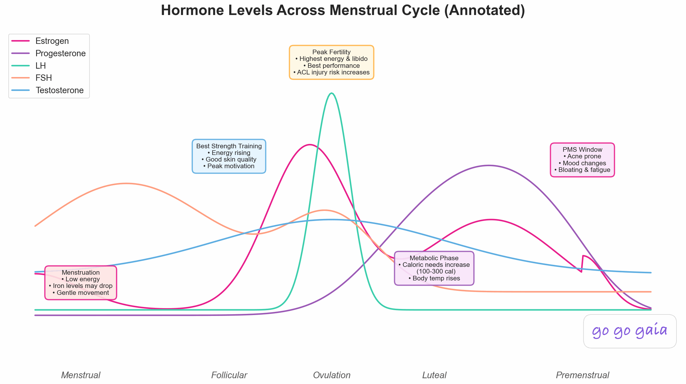

Best Egg Freezing Tracking App 2026: 6 Apps Compared

Egg freezing is a 10 to 14 day sprint of daily injections, frequent monitoring appointments, and side effects that are hard to predict. Here's how 6 apps handle the medication, symptom, and emotional tracking side of an egg freezing cycle.
Quick Answer: Best App for Egg Freezing?
- Best dedicated tracker: Berry Fertility. Egg freezing care path, medication barcode scanning, stim phase calendar, mature follicles chart, 4.9 App Store rating
- Best free AI-first option: Viva Fertility. Eggion AI assistant marketed for egg freezing, cycle tracking, clinic comparison tools
- Best for community during your cycle: Glow. Active fertility forums and partner app
- Best for general fertility users adding a cycle: Flo. Largest user base, familiar interface if you already track with Flo
- Best for detailed symptom logging: Ovia Fertility. Extensive symptom catalog, most features free
- Best for the symptom + lifestyle side of your cycle: Go Go Gaia. Daily symptom, mood, sleep, and nutrition tracking alongside wearable data, doctor-ready export
Full Transparency
This guide is published by Holland Neurotech Inc., the company behind Go Go Gaia. Go Go Gaia tracks the symptom, mood, sleep, nutrition, and wearable side of an egg freezing cycle. It is not a treatment-protocol app, so dedicated trackers like Berry Fertility may be a better fit if your priority is medication scanning, EMR integration, or care-path templates.
Our goal is to help you find what actually works during your cycle, whether that's Go Go Gaia, another app, or a combination.
According to SART, the Society for Assisted Reproductive Technology, US clinics reported 39,269 egg freezing cycles in 2023, a 39.2% jump from the year before[1]. Egg freezing is one of the fastest-growing categories in assisted reproductive technology, and yet there is still no clear category-leader app the way Flo dominates period tracking.
If you're freezing your eggs, you already know it's a lot. Stim medications at the same time every night. Monitoring appointments every 2 to 3 days. A trigger shot at a precise hour.
And in between, side effects that are hard to predict: bloating, mood swings, exhaustion, the emotional reality of doing something this medically intense.
A regular period tracker won't help. Your clinic portal handles the protocol but rarely captures how you actually feel. This guide compares 6 apps that try to fill that gap.
Educational content, not medical advice. Egg freezing is a medical procedure. Always follow your fertility clinic's protocols and your reproductive endocrinologist's guidance.
Step 1: What Egg Freezing Tracking Actually Requires
An egg freezing cycle is its own thing. Not a natural cycle, not exactly the same as IVF (no transfer, no embryo development). The tracking needs reflect that.
Stim Phase Medication Tracking
A typical stim phase runs 8 to 14 days with daily injectable medications, usually gonadotropins like Gonal-F or Menopur. Mid-cycle, an antagonist like Cetrotide or Ganirelix gets added to suppress early ovulation. Then a trigger shot at a precise time, often in the middle of the night, sets up the retrieval 36 hours later.
The best apps send reminders for each medication, let you log when you actually took it, and surface the trigger timing prominently so you don't miss it.
Monitoring Appointment Tracking
Most cycles include 4 to 6 monitoring appointments, with bloodwork checking estradiol, LH, and progesterone, plus ultrasounds counting follicles and measuring lining. Having that data in one place across appointments lets you see your own trends, not just the latest result.
Side Effect and Symptom Logging
Stim medications cause real physical changes. Bloating is common as the ovaries enlarge. Mood swings, headaches, breast tenderness, sleep disruption, and fatigue are all reported by many people during stim. After the trigger, the bloating often peaks. Tracking what you're feeling day to day gives you a record to share with your clinic and a personal log of what your body went through.
Ovarian hyperstimulation syndrome (OHSS) is a possible complication of stim cycles. Your clinic will give you specific guidance on what to watch for and when to call. Tracking symptoms alongside your protocol gives you the data to bring to that conversation.
Emotional Tracking
Egg freezing is emotionally heavy in a way the medical timeline doesn't capture. The decision to freeze, the cost ($10,000 to $20,000 per cycle out of pocket in the US[2]), the daily injections, the uncertainty about future use, the hormonal effects on mood. Many people find that tracking mood alongside the cycle helps them recognize patterns and talk about it with a partner, friend, or therapist.
Recovery After Retrieval
The first few days after retrieval often involve continued bloating, cramping, and slow recovery. Some people feel normal within a few days. Others take longer. Logging recovery alongside the cycle gives future you (or future cycles) a baseline.
Step 2: The 6 Apps Compared
For Dedicated Egg Freezing Tracking: Berry Fertility
Best if you want: A purpose-built fertility treatment tracker with an egg freezing care path, medication barcode scanning, and clinical features built for stim cycles.
Key Features
- Personalized care paths for egg freezing (and IVF, IUI, FET)
- Medication barcode scanning. Point your camera at the medication packaging and the app identifies it, sets reminders, and pulls up the matching injection video
- Stim phase tracking with stimulation date display in the calendar (added in the December 2025 update)
- Mature follicles chart showing follicle count progression across monitoring appointments
- Hormone trend visualization for estradiol and other monitoring labs
- Injection tutorial videos for self-administering each medication
- Treatment-stage badges in the daily calendar (stim, trigger, retrieval, recovery)
- EMR clinic integration with partner clinics (Pinnacle Fertility partnership covers 40+ US clinics as of late 2025)
- Partner sharing with removable access
- Symptom logging and lab result tracking
Strengths
- 4.9 App Store rating with 27 reviews (as of May 2026)
- Built by a team of Google alumni. Founded in 2022 and actively maintained, with quarterly feature updates
- The medication barcode scanner is the standout feature for stim. Scan the box, get reminders and videos automatically
- Egg freezing is one of their named care paths, not just an afterthought tacked onto an IVF app
- HSA/FSA eligible
- Cross-platform (iOS and Android)
- One reviewer noted on the App Store that Berry was the only fertility app they tried that didn't have distracting ads or features they didn't need during their egg freezing cycle
Limitations
- Smaller user base than larger fertility apps. 27 ratings is solid for the niche but modest in absolute terms
- EMR integration only works at partner clinics. If your clinic isn't on their list, you keep the consumer features but lose the sync side
- No nutrition, fitness, or broader health tracking
- No wearable integration
- Premium subscription required for the full feature set after the 7-day trial
- Built around treatment, not lifestyle, so it doesn't track how stim affects sleep, energy, or daily mood patterns the way a broader health app would
Who Should Choose This
- You want an app built specifically for fertility treatment cycles
- Medication management with barcode scanning is your top priority
- Your clinic is a Berry partner and you want sync with their records
- You're anxious about self-injections and want video guidance
- You want partner sharing so they can follow along with your cycle
Pricing: Free tier with basic tracking. Premium $8.33/month billed annually ($99.99/year) or $12.99/month, with 7-day free trial. HSA/FSA eligible.
Download: Available on iOS and Android
For Free AI-First Tracking: Viva Fertility
Best if you want: A free app with an AI assistant that's specifically marketed for egg freezing decisions and tracking.
Key Features
- "Eggion" AI fertility assistant, marketed by Viva as built for answers about egg freezing and IVF
- Centralized tracking for appointments, medications, and notes with smart reminders
- Clinician-reviewed educational courses covering fertility preservation and emotional wellness
- Clinic comparison tools to evaluate fertility clinics and understand treatment costs
- Personalization (the app states it learns user preferences over time)
Strengths
- Currently fully free with no premium tier mentioned in the App Store listing
- AI assistant is positioned around egg freezing specifically, not retrofitted from general fertility content
- Clinic comparison tools are unusual for a tracking app and can be useful if you're still deciding where to freeze
- Clean modern interface
Limitations
- Very new app. Only 4 App Store ratings as of May 2026, so the 5.0 average isn't statistically meaningful yet
- iOS only
- Smaller feature set than mature trackers. No barcode scanning, no EMR integration, no follicle/hormone charts
- AI quality and persistence are unverified in long-term use, given how new the app is
- No partner sharing
- Limited symptom logging compared to Berry or Ovia
Who Should Choose This
- You're still in the research phase and want clinic comparison tools alongside tracking
- You want a free, lightweight option without a subscription
- You're comfortable being an early adopter of a newer app
- You don't need EMR integration or advanced clinical features
Pricing: Free.
Download: Available on iOS
For Community During Your Cycle: Glow
Best if you want: Active fertility forums and a partner app while you go through stim.
Key Features
- Cycle tracking with an IVF mode that also covers egg freezing
- Active fertility forums and community boards
- Partner app (Glow for Men) for shared tracking and updates
- Medication logging
- Appointment tracking
- Cycle reports and statistics
Strengths
- One of the most active fertility communities in any app. Useful if you want to hear from people doing or having done the same cycle
- Partner app means your partner can follow along with their own view
- Large user base, so you'll find people who've been through similar cycles
- Cross-platform (iOS and Android)
Limitations
- Glow had a vulnerability disclosed in February 2024 that exposed personal data for around 25 million users via an Insecure Direct Object Reference flaw in its forum API[3]. Glow fixed it within about a week. Earlier, Glow agreed to a $250,000 settlement with the California Attorney General in 2020 over privacy and security practices
- Mozilla's Privacy Not Included review has flagged Glow with a privacy warning[4]
- Egg freezing isn't a dedicated mode, it's handled through IVF tracking. Some stim-specific features are basic
- Many features locked behind Glow Premium ($59.99/year or $7.99/month)
- No nutrition or broader health tracking
- No wearable integration
- Ads in the free tier
- Recent user reviews (January 2026) reported prediction accuracy issues after app updates
Who Should Choose This
- Community and peer support during your cycle is a top priority
- You want your partner to have their own app view
- You're comfortable with Glow's privacy practices after the 2024 data breach
- You want a general fertility app that handles egg freezing as part of IVF mode
Pricing: Free (with ads), Glow Premium ~$59.99/year or $7.99/month.
Download: Available on iOS and Android
For Familiar Tracking If You Already Use Flo: Flo
Best if you want: Continuity with the app you already use for cycle tracking, with educational content layered on top.
Key Features
- Largest user base of any women's health app (420M+ downloads)
- AI chatbot for fertility and health questions
- Cycle tracking and symptom logging
- Extensive content library covering egg freezing, IVF, and fertility preservation
- Large community of fertility users
Strengths
- Familiar if you already track your cycle with Flo, no learning curve
- Content library covering egg freezing is detailed and medically reviewed
- AI chatbot can answer common questions
- Cross-platform
Limitations
- No dedicated egg freezing mode. The app is built around natural cycles, and stim cycles don't fit the prediction model
- Privacy history: FTC settlement in January 2021 for sharing data with Facebook and Google in violation of Flo's own privacy policy[5], plus a combined $56M class action settlement with Google in 2025 ($48M from Google, $8M from Flo)[6]. Anonymous Mode was added in response, but the history is worth knowing for sensitive treatment data
- Best features behind Premium ($39.99/year), which adds up if you're already paying for treatment
- Symptom logging is broad but not stim-specific
- No medication reminders for injectable fertility meds
- No follicle or hormone charts
Who Should Choose This
- You already use Flo and want to keep tracking in one place
- You value the content library as a research tool more than the tracking itself
- You're comfortable with Flo's privacy history
- You're planning to use a dedicated app for the medical side and want Flo as the content layer
Pricing: Free (with ads + limited features), Flo Premium ~$39.99/year.
Download: Available on iOS and Android
For Detailed Symptom Logging: Ovia Fertility
Best if you want: Granular symptom tracking and free access to most features.
Key Features
- Extensive symptom and side-effect catalog
- Personalized health insights based on logged data
- Food safety lookup and nutrition tracking
- Separate pregnancy app to transition into if your cycle leads to a future pregnancy
- Cycle tracking and appointment logging
- Most features available without a subscription
Strengths
- Symptom logging is the most detailed among general fertility apps. Useful for capturing the day-to-day reality of a stim cycle
- Most content free, fewer paywalls than Flo or Glow
- Data-oriented users like the depth of tracking options
Limitations
- No dedicated egg freezing mode. Stim cycle has to be tracked manually around the natural cycle assumptions
- Data sharing with employers via workplace wellness programs. Ovia partners with employers and shares aggregated data, and the privacy policy is lengthy and not always clear about what's shared
- Independent reviewers have noted that Ovia's fertility predictions can be imprecise, and the fertility score system can feel overly complex
- No medication barcode scanning or EMR integration
- No injection tutorial videos
- Interface can feel cluttered with so many tracking options
- Limited dedicated egg freezing content
Who Should Choose This
- You want the most granular symptom tracking and don't mind the lack of a dedicated egg freezing mode
- You want most features without paying for premium
- You're already comfortable using Ovia for cycle tracking
- You're aware of the employer data-sharing model and comfortable with it
Pricing: Free (most features available).
Download: Available on iOS and Android
For the Symptom + Lifestyle Side of Your Cycle: Go Go Gaia
Best if you want: Daily symptom, mood, sleep, and nutrition tracking alongside wearable data during your cycle and after retrieval.
Key Features
- Daily symptom logging with 20+ trackable symptoms, including bloating, headaches, breast tenderness, sleep disruption, and fatigue
- Mood tracking with a 14-day daily check-in mode during the cycle
- Wearable integration with Apple Watch, Oura, and Garmin for automatic sleep, heart rate, and stress data
- Nutrition tracking, useful during stim when bloating and gut comfort affect food choices
- Medication and supplement logging with reminders
- Lab result tracking for hormone panels (estradiol, progesterone, AMH)
- Correlation insights showing how lifestyle factors connect to how you feel
- Doctor-ready data export to share with your fertility clinic
- Cycle tracking that picks back up naturally after your cycle ends
Strengths
- Covers the symptom and lifestyle side that dedicated treatment apps don't focus on
- Wearable data captures what you can't easily self-report: sleep quality changes during stim, heart rate variability shifts, recovery patterns after retrieval
- No ads, no data selling
- Free core features. Tracking your cycle, symptoms, mood, and lab results doesn't require premium
- Transitions back to cycle tracking after your cycle, so you don't need to switch apps when your period returns
Limitations
- Not a treatment-protocol app. No injection site rotation tracking, no medication barcode scanning, no follicle-count chart
- No EMR integration with fertility clinics
- No partner sharing for treatment updates
- iOS only
- Full AI features require premium (~$12/month)
- Newer app with a smaller community than larger fertility apps
Who Should Choose This
- You want to track the symptom, mood, sleep, and nutrition side of your cycle, not just the medication protocol
- You wear an Apple Watch, Oura, or Garmin and want that data alongside your cycle
- You want a doctor-ready export to bring symptom and lifestyle context to your next appointment
- You don't need EMR integration or barcode scanning
- You want one app that picks back up with cycle tracking after the cycle ends
Pricing: Free (most features), Premium ~$12/month for full AI insights.
Download: Available on iOS App Store
Worth Noting: Decision Tools, Reminder Apps, Clinic Platforms
A few adjacent tools come up often in egg freezing conversations but don't fit the comparison above. Worth knowing they exist:
For Research Before You Decide
FrzMyEggs (free, iOS and Android) is a decision aid, not a tracker. It includes a calculator that estimates the number of eggs you might produce per cycle, a five-question knowledge quiz, and video tutorials. Useful in the research phase before you commit to a cycle. It was an Edison Awards nominee in 2018.
For Medication Reminders Only
Medisafe, Round Health, and MyTherapy are general medication reminder apps that come up often in fertility community conversations. Some people prefer them for stim shot reminders because they're optimized for medication timing and nothing else. The tradeoff: no fertility-specific context, no follicle tracking, no symptom logging. Best as a companion to a fertility tracker, not a replacement.
Clinic and Financing Platforms (Not Consumer Trackers)
Cofertility runs an egg-freezing-via-donor-program model and publishes fertility content but does not ship a consumer tracking app. Future Family is a financing platform for fertility treatment with a web dashboard, not a mobile tracker. Kindbody is a national fertility clinic network with a patient portal but no standalone consumer tracker. Frame Fertility is a personalized coaching service with care coordinators, not an app. Worth knowing they exist if you're evaluating clinic-tied options, but they're not what you'd use to track your daily cycle.
Feature Comparison Table
Here's how the 6 apps stack up on features that matter most during an egg freezing cycle:
| Feature | Berry Fertility | Viva Fertility | Glow | Flo | Ovia | Go Go Gaia |
|---|---|---|---|---|---|---|
| Dedicated Egg Freezing Mode | ✅ Care path | ✅ Eggion AI | ⚠️ Via IVF mode | ❌ Natural cycle only | ❌ Natural cycle only | ⚠️ Symptom + lifestyle side |
| Medication Reminders | ✅ With barcode scan | ✅ Basic | ⚠️ Basic | ❌ | ⚠️ Basic | ✅ Custom |
| Injection Tutorials | ✅ Video guides | ❌ | ❌ | ❌ | ❌ | ❌ |
| Follicle/Hormone Charts | ✅ Mature follicles + hormone trends | ❌ | ❌ | ❌ | ❌ | ✅ Lab tracking |
| Clinic EMR Integration | ✅ Partner clinics | ❌ | ❌ | ❌ | ❌ | ❌ |
| Side Effect Logging | ✅ Treatment-focused | ⚠️ Basic | ⚠️ Basic | ⚠️ General symptoms | ✅ Detailed catalog | ✅ 20+ symptoms |
| Mood / Emotional Tracking | ⚠️ Basic | ⚠️ Basic | ⚠️ Basic | ⚠️ Basic | ✅ Detailed | ✅ Detailed |
| Nutrition Tracking | ❌ | ❌ | ❌ | ❌ | ✅ Free | ✅ Free |
| Wearable Integration | ❌ | ❌ | ❌ | ❌ | ❌ | ✅ Apple Watch, Oura, Garmin |
| Partner Sharing | ✅ Shared view | ❌ | ✅ Glow for Men | ❌ | ❌ | ❌ |
| Community / Forums | ❌ | ❌ | ✅ Large fertility forums | ✅ Large user base | ⚠️ Smaller | ❌ |
| Privacy Practices | ✅ EMR-grade | ✅ Stated privacy-first | ⚠️ 2024 breach + Mozilla concerns | ⚠️ FTC + class action history | ⚠️ Employer data sharing | ✅ No ads, no data selling |
| Free Tier | ⚠️ Basic only | ✅ Fully free | ⚠️ Ads + limits | ⚠️ Ads + limits | ✅ Generous | ✅ Generous |
| Platforms | iOS + Android | iOS only | iOS + Android | iOS + Android | iOS + Android | iOS only |
| Best For | Dedicated tracking | Free AI-first | Community | Existing Flo users | Detailed symptoms | Symptom + lifestyle |
Step 3: Making Your Decision
Here's the bottom line for each app:
Choose Berry Fertility if:
- You want the dedicated tracker with an egg freezing care path
- Medication barcode scanning is your top priority for stim
- Your clinic is a Berry partner (check their website)
- Injection tutorial videos would reduce your anxiety
- You want partner sharing during your cycle
Choose Viva Fertility if:
- You're still in the research phase and want clinic comparison tools
- You want a free app with no subscription
- You're comfortable being an early adopter of a newer app
- You like AI assistant features for getting quick answers
Choose Glow if:
- Community and peer support during your cycle is a top priority
- You want your partner involved through their own app
- You're comfortable with Glow's privacy practices after the 2024 data breach
Choose Flo if:
- You already use Flo and want to keep tracking in one place
- You value the content library as a research tool
- You're comfortable with Flo's privacy history
- You're planning to pair Flo with a dedicated tracker for the medical side
Choose Ovia Fertility if:
- You want the most detailed symptom tracking available in a general fertility app
- You want most features without paying for premium
- You're aware of the employer data-sharing model and comfortable with it
Choose Go Go Gaia if:
- You want to track the symptom, mood, sleep, and nutrition side of your cycle, not just the protocol
- You wear an Apple Watch, Oura, or Garmin and want that data alongside your cycle
- You want a doctor-ready export of symptom and lifestyle context
- You want one app that picks back up with cycle tracking after your cycle ends
Consider Using Two Apps
A common pattern during an egg freezing cycle is to use one app for the medical protocol (like Berry Fertility for medication scanning and EMR sync) and a second for the symptom and lifestyle side (like Go Go Gaia for daily mood, sleep, wearable data, and nutrition). The medical side has clear leaders. The symptom and lifestyle side rarely overlaps with treatment apps. Pairing the two gives you a fuller picture than either one alone.
Privacy Considerations
Egg freezing data is extremely sensitive: treatment details, financial information, hormone levels, and a record of a decision many people aren't ready to share publicly. Here's how each app handles it:
- Berry Fertility integrates with clinic EMR systems, meaning data flows through existing healthcare infrastructure with its associated protections. This is the safest option if your clinic is a Berry partner.
- Viva Fertility states its AI learns user preferences while maintaining privacy. The privacy practices are stated in the App Store listing but the app is new enough that long-term privacy review hasn't happened yet.
- Glow experienced a data breach in 2024. Mozilla's Privacy Not Included review has rated Glow's privacy practices unfavorably. Worth careful consideration before signing up.
- Flo settled with the FTC in 2021 for sharing user data with Facebook and Google, and a $56M class action was settled in 2025. Anonymous Mode was added in response, but the history is worth knowing.
- Ovia partners with employers via workplace wellness programs and shares aggregated data. The privacy policy is lengthy and not always clear about what's shared. Worth reading before signing up.
- Go Go Gaia keeps data private and does not sell to third parties or show ads.
Tips for Tracking During Your Cycle
- Set up medication reminders before your cycle starts. Enter every medication with its time before day one so reminders are ready to go. The first few days of stim are a lot, and the last thing you want is to be setting up reminders while also doing your first injection.
- Log injection sites if your app supports it. Rotating helps reduce bruising and discomfort. If your app doesn't track this, a quick note in the daily log works fine.
- Write down lab results right away. Your clinic will call with estradiol numbers and follicle counts. Log them immediately. Over 4 to 6 monitoring appointments, having a running record is more useful than trying to remember.
- Track how you actually feel, not just what you took. Bloating, mood, sleep, energy. These are real data points for your clinic and a personal record of what your body went through.
- Don't compare your numbers to others. Forums are full of follicle count comparisons. Your numbers are your numbers. Focus on your own trend across appointments.
- Keep tracking after retrieval. Recovery is its own phase. Bloating often peaks after the trigger and takes time to come down. Tracking how recovery actually goes gives you a baseline if you do future cycles.
- Capture the emotional side, not just the medical one. Many people describe the days around retrieval and the first period afterward as emotionally heavy. A daily mood log gives you something to look back on and patterns to share with a partner or therapist.
Frequently Asked Questions
Is there an app specifically for egg freezing?
Sort of. Berry Fertility supports egg freezing as a core care path with medication barcode scanning, a stim phase calendar, and a mature follicles chart. Viva Fertility markets its Eggion AI assistant specifically for egg freezing decisions and tracking. Most other dedicated fertility trackers cover egg freezing alongside IVF and IUI. There is no single app universally considered the category leader for egg freezing alone.
What should I track during an egg freezing cycle?
Most people track medication timing for stim shots and the trigger, monitoring appointments and bloodwork results, follicle counts from ultrasounds, daily side effects like bloating or mood changes, and recovery after the retrieval. Tracking the symptom side alongside the medical protocol gives you a fuller picture to share with your fertility clinic.
Can I use a regular period tracker for egg freezing?
A regular period tracker isn't designed for a stim cycle. Egg freezing involves controlled ovarian stimulation with daily injectable medications, monitoring every few days, a trigger shot at a precise time, and a retrieval procedure. None of that follows a natural cycle. A dedicated fertility treatment tracker or an all-in-one health tracker with medication and symptom logging will be more useful during your cycle.
How many people freeze their eggs each year?
According to SART, 39,269 egg freezing cycles were reported in the US in 2023, a 39.2% increase from the prior year. Egg freezing is one of the fastest-growing categories in assisted reproductive technology, which is part of why there's no single dominant app for it yet.
Will an app replace my clinic's portal?
A tracking app doesn't replace your clinic's portal. Your fertility clinic's portal handles the medical protocol, prescriptions, lab results, and care team communication. A tracking app sits alongside that, focused on the day-to-day experience: medication reminders, side effect logging, mood tracking, and a personal record of your cycle that the portal doesn't capture.
Are egg freezing tracking apps free?
Most have a free tier and several charge for premium. Berry Fertility offers a free tier with premium at $8.33 to $12.99 per month (HSA/FSA eligible). Viva Fertility is currently free. Flo, Glow, and Ovia have free tiers with premium subscriptions. Go Go Gaia is free for core features with optional premium at around $12 per month.
Should I track my emotional side or just the medical one?
Both, if you can. The medical side gives you data for your clinic. The emotional side gives you a record of how you actually experienced the cycle. Many people find the emotional log more valuable in hindsight than they expected, especially if they do future cycles.
Final Thoughts
Egg freezing is one of the most medically intense things a person can choose to do, and the right app depends on what part of the experience you most want help managing.
If you want the leading dedicated tracker, Berry Fertility has an egg freezing care path, medication barcode scanning, a stim phase calendar, and EMR integration where your clinic is a partner. If you want a free AI-first option and clinic comparison tools, Viva Fertility is worth trying. If community support during your cycle matters most, Glow has active fertility forums. If you already use Flo or Ovia and want continuity, both can layer onto your cycle, but neither has an egg freezing mode. And if you want to track the symptom, mood, sleep, and lifestyle side of your cycle alongside wearable data, Go Go Gaia handles the part dedicated treatment apps don't focus on.
A lot of people end up using two apps during their cycle: one for the medical protocol and one for the symptom and lifestyle side. That's a perfectly good approach. The important thing is keeping yourself organized and giving your future self a record you'll be glad to have.
Track the Symptom Side of Your Cycle
Your clinic's portal handles the protocol. The day-to-day experience of stim, the bloating, mood, sleep changes, and how you actually feel, is what you bring to your next appointment. Go Go Gaia tracks symptoms, mood, sleep, nutrition, and wearable data alongside your cycle.
Start a Daily Symptom LogFree to start. Most people notice their own day-to-day patterns within the first week of tracking.
Related Articles
- Best IVF Tracking App 2026: 5 Apps Compared
- Best Fertility Tracking App 2026: 8 Apps Compared for TTC
- How to Tell If You're Ovulating: 5 Signs, Symptoms & Tracking Methods
- Best Period Tracker App 2026: 6 Apps Compared
Other App Comparisons
- Best IVF Tracking App 2026: 5 Apps Compared
- Best Fertility Tracking App 2026: 8 Apps Compared for TTC
- Best Pregnancy App 2026: 6 Apps Compared
- Best PCOS Tracking App 2026: 7 Apps Compared
- Best Endometriosis App 2026: 7 Apps Compared
Still deciding? Pick one. Track it for the first week of stim. You'll know fast whether it's the one you want to keep using.